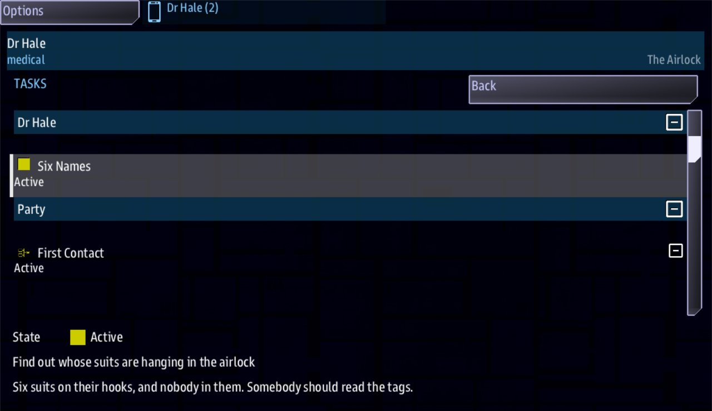

Class 3, Lecture 5 - Personal quests¶
What you will have at the end¶
Two of your crew go aboard the hulk with a story of their own. Dr Hale is asked whose suits are hanging in the airlock. Chief Okoro is asked how the core was stopped. Each story is handed to its person when they beam down, and it is listed on that person's handheld. Only that person's own reading finishes it, and finishing the surgeon's completes a quest for the whole ship.

Dr Hale's handheld on the Tasks app: Six Names, Active, under her own name, the party's quests under Party, and the selected quest's order and line at the foot.You will add one section and one quest to mission.amd, change two choices, and add a few
words to one line of story.mast.
The video¶
About 6 minutes. Subtitles are available in the player.
Before you start¶
- Your mission from Lecture 4: the crew roster with
Skills:, the rooms, the two readings, the check and the log. - You have chained quests with
Then:(Class 1, Lecture 9) and pasted the boarding recipe card (Lecture 2). sbs lint MyBoardingsaysclean.- Three consoles if you can manage it: Helm to fly, and Engineering and Science to go aboard.
Words for this lecture:
| Word | Meaning |
|---|---|
| Side story | A quest that belongs to one person in the party |
| Hand out | Give a side story to its person. The game does it as they beam down |
| Tasks | The app on the handheld that lists a person's own stories |
Step 1 - A section for side stories¶
Open mission.amd. Go to the very end of the file, leave two blank lines, and add a new
section with one story in it:
## [Side Stories](side_stories)
### [Six Names](six_names)
---
For: medical
Starts when: at once
Objective: Find out whose suits are hanging in the airlock
Done when: signal names_read
---
Six suits on their hooks, and nobody in them. Somebody should read the tags.
A side story is a quest. It has the fields you learned in Class 1. What is new is who it belongs to. A quest in your Quests section belongs to the whole ship. A side story belongs to one person. You will see it on that person's handheld, aboard the hulk, in the Tasks app (Step 8).
| Line | What it means |
|---|---|
For: medical |
Who the story is for. A job word from a Roles: line in your crew roster |
Starts when: at once |
The story is already running when it is handed over |
Objective: |
The one sentence that says what is asked |
Done when: signal names_read |
What finishes it: a signal with a name you choose. Step 2 sends it |
Save, and run lint. It warns twice, and both are true for the moment:
== mission.amd ==
[WARNING] line 159:5: nothing in this mission hands out `Side Stories`, so nobody gets the quests in it. Give it to the visit: `boarding_visit(..., stories=amd_section(MISSION_DOC, "side_stories"))` (stories-not-handed-out)
[WARNING] line 166:19: `six_names` waits for the signal `names_read`, and nothing in the mission sends it, so that wait never ends. Check the spelling against the line in the story that sends it (unfired-signal)
1 amd + 1 mast file(s): 0 error(s), 2 warning(s)
Step 2 clears the second, and Step 3 clears the first.
Step 2 - Her own reading finishes it¶
In The Airlock, find the choice only the surgeon is offered. Add a comma and a signal to the end of it:
Everything after the ; is what happens when the choice is taken. There are two things
now, with a comma between them.
| Part | What it does |
|---|---|
learn suits |
The party learns the fact, as before |
signal names_read |
Sends the signal that Six Names is waiting for |
The name after signal must be the name after Done when: signal, letter for letter.
Do not forget the comma. A second ; works in place of it.
Step 3 - Hand the stories to the visit¶
Open story.mast and find the boarding card you pasted in Lecture 2, at the end of the
file. One line of it begins boarding_visit(. Add the last part, from the comma after
"The Hulk" to the two closing brackets:
boarding_visit(party_ship, dialogue_scenes(amd_section(MISSION_DOC, "boarding")), "airlock", title="The Hulk", stories=amd_section(MISSION_DOC, "side_stories"))
It is still one line.
| Part | What it means |
|---|---|
stories= |
These are the quests that each belong to one person |
amd_section(MISSION_DOC, "side_stories") |
Read them from the section of mission.amd with this key |
The key in quotes must be the key in round brackets on your Side Stories heading.
That is the whole change. From now on each person is handed their story as they beam down,
including someone who beams down late. Run lint, and it says clean.
Step 4 - A second story¶
Below Six Names, add a story for the engineer:
### [A Cold Core](cold_core)
---
For: engineering
Starts when: at once
Objective: Find out how the core was stopped
Done when: signal core_read
---
A reactor does not shut itself down in the right order. Find out who did.
In The Reactor Room, add the signal to the choice only the engineer is offered:
Now each of your two people goes aboard with something that is theirs.
Step 5 - Where a story leads¶
A side story can lead on in the same way any quest can: with Then:.
Add one line to Six Names, below Done when::
Then go up to your Quests section and add a quest for the whole ship, below the last line of Close Inspection:
### [Account for the Crew](account)
---
Scope: shared
Starts when: at once
Objective: Find out who was aboard the hulk
Done when: signal names_known
Reward: 150 credits
---
Somebody crewed that ship. Command wants names.
## Where names are kept
-  Suits. Every suit in an airlock is tagged with its owner's name.
-  The log. A captain's log says who is aboard.
Bring the names home, and DS 1 can tell their families something.
The ship's quest is read in the Quest Log (a bridge console's handheld, then Quests), so
its description is a page (Class 1, Lecture 8): a plain heading, two bullets and a closing paragraph. One thing is new. A bullet
that starts -  uses a small picture for its dot. The word after
icon:// names a picture from the game's icon sheet: person, tablet, hourglass,
flag and many more, listed on the "Icons by name" page of the library documentation.
A side story's description is different. On a visit of rooms, Tasks lists a story's heading and its state, and nothing else, so nobody reads the words under the fence. Keep them short: they are a note to yourself.
Read the chain from the top. The surgeon reads the tags. That sends names_read, which
finishes her story. Her story then sends names_known, and the ship's quest hears it.
| Line | Waits for a signal, or sends one |
|---|---|
Done when: signal names_read |
Waits |
Then: signal names_known |
Sends |
A side story can carry a Reward: of its own. It is paid to the ship the person came from.
Then: on a side story can do two things. One other thing looks as if it should work, and
does not.
| You write on a side story | What happens |
|---|---|
Then: signal names_known |
Any quest waiting on that signal hears it. The ship's quests count |
Then: reveal the_seventh |
Wakes another side story, if it is for the same person and says Starts when: revealed |
Then: reveal account |
Nothing. A side story cannot reveal a quest in your Quests section |
Not in this lecture: Leads to:. You will see a second field on side stories in other
people's files. Leads to: points a person at a thing on a map: a door, a crate, someone
to talk to, a place in a ruin. A place made only of rooms has none of those, so Leads to:
does nothing here, and lint does not say so. It comes back when your place has a map, and
in ruins (Class 4).
Step 6 - Four rules for a side story¶
- A side story is a bonus, never the only way. Nobody covers for a person. If the surgeon stays on the ship, her story is handed to nobody. Another console may still take her reading, marked as covering, and the fact is learned. But Six Names was never handed out, so Account for the Crew stays open. Your log still opens at two facts, so any party can finish the main story.
- One job word, in three places.
Roles: medicalon the roster,For: medicalon the story,if medicalon the choice that finishes it. If the choice has noif, anyone's press finishes her story. - A job, or a person.
For:takes one job word, or one person from your roster. A person stays that person even when the player at the console has saved a name of their own. - One story goes to one person. If two people share a job, one of them is handed the story. The other is not.
What For: takes:
| You write | Who is handed the story |
|---|---|
For: medical |
The person whose Roles: line says medical. Capital letters do not matter |
For: hale |
The person whose roster heading has the key hale |
For: Dr Hale or For: Hale |
The same person, by name or by last name |
For: science |
Nobody. Science is Dr Hale's seat. Her job is medical |
For: medical, engineering |
Nobody. For: takes one job or one person |
For: everyone |
Nobody. A story for everyone is a quest in your Quests section |
Step 7 - Check it¶
You want clean under mission.amd. Lint names every mistake in this table. The words in
the last column are at the end of the line lint prints. Each row was tried on the finished
files: one change, lint, then the game.
| Mistake | What the game would do | Lint says |
|---|---|---|
; learn suits signal names_read (the comma left out), or learn suits and signal names_read |
Never send the signal, so the story never finishes | outcome-run-together |
The choice says signal names_red |
Never finish the story | unfired-signal on Six Names, and signal-no-route on the airlock |
The choice says sginal names_read |
Never finish the story | unknown-outcome-verb, and unfired-signal on Six Names |
The choice has no signal at all |
Never finish the story | unfired-signal on Six Names |
if medical, signal names_read (no ;) |
Offer the choice to nobody | unreadable-guard |
For: medcal, For: science, For: everyone, or two jobs |
Hand the story to nobody | for-nobody, with the words your roster does answer to |
No For: line, or Fro: medical |
Hand the story to nobody | story-no-for (and unknown-field for Fro) |
For medical (no colon) |
Hand the story to nobody | fence-syntax, an error, and story-no-for |
For: typed below the closing --- |
Hand the story to nobody | field-below-fence, and story-no-for |
No Starts when: line, or Starts when: accepted |
Hand the story over asleep. Nothing wakes it | for-not-started |
No Done when: line |
Leave the story running for good | for-no-end |
Scope: shared on a side story |
Make it the ship's quest. Nobody gets it as their own | for-shared |
Then: signal names_knwon |
Finish the story and leave the ship's quest open | unfired-signal on Account for the Crew, and signal-no-route on Six Names |
Then: names_known (the word signal left out) |
The same | dangling-reveal, and unfired-signal on Account for the Crew |
| A story written with two hashes | Hand that story to nobody | for-section-level: give its heading 3 hashes |
| A story written with four hashes | Make it a step of the story above it. The engineer's story goes to the surgeon | for-nested |
| The Side Stories heading written with three hashes | Hand out nothing. The section has become a room | A warning for every line: For, Starts when and the rest are not dialogue fields |
| Two stories with the same key | Hand out the first one only | duplicate-key |
| A side story typed under your Quests section | Make it the ship's quest. For: is ignored |
for-in-quests |
The words stories=... left off the boarding_visit line |
Hand out nothing | stories-not-handed-out |
"side_story" on the boarding_visit line, side_stories on the heading (or the other way round) |
Hand out nothing | stories-not-handed-out |
What lint cannot see. It says clean for the first and last of these, and for the second
it warns about something else:
| You wrote | What happens |
|---|---|
Leads to: suits, or Leads to: with any other key |
Nothing. See Step 5 |
Then: reveal account on a side story |
Nothing is revealed. Lint only says that Account for the Crew is waiting on a signal nothing sends |
-  Suits. |
The bullet is drawn with no picture. A name the game does not know draws nothing (read from the game's code) |
Step 8 - Play it¶
With two aboard, Engineering and Science:
- Before you leave the station, open the quest list. Account for the Crew is there.
- Fly inside 500 of the hulk. On Engineering and on Science, press the handheld icon, open Boarding Party and press BEAM DOWN.
- On the Science console (Dr Hale), press Back (top right). The handheld shows a list
headed
xESSwith three rows: Crew, Act and Tasks. Open Tasks. Under her name is Six Names, marked Active. Below it, under Party, are the ship's quests. Press Back, then open Act. - In the airlock, Dr Hale takes Read the name tags on the suits.
- The crew on the bridge is told twice in the ship's log:
Quest complete: Account for the CrewandQuest complete: Six Names. The side is paid 150 credits. - Step back, then go aft. The Engineering console (Chief Okoro) takes Read the shutdown
record. The bridge is told
Quest complete: A Cold Core. - Walk back to the airlock, return to the ship, and open the quest list. Account for the Crew is complete.
A person with no story of their own has two apps on the handheld, Crew and Act.
With Engineering alone aboard: you are Chief Okoro. The suit tags come to you as the last button, marked as covering for medical. Take the reading. The party learns the fact, and Account for the Crew stays open, because nobody was handed Six Names. Your own story, A Cold Core, still finishes when you read the shutdown record.
If something goes wrong¶
| What you see | Likely cause |
|---|---|
| The surgeon reads the tags and nothing completes | Run lint first. Then check in this order: the comma before signal on her choice; stories= on the boarding_visit line; the word after For: against her Roles: line; the Starts when: at once line |
| There is no Tasks app on the handheld | That person was handed no story. Check For: and the boarding_visit line |
| A Cold Core completes and Six Names does not | The two stories are spelled differently somewhere. Compare For:, Starts when: and the signal name, line by line |
| Six Names completes and Account for the Crew stays open | The name after Then: signal is not the name after Done when: signal on the ship's quest |
| Account for the Crew completes when the surgeon is not in the party | Six Names is typed under your Quests section, or it says Scope: shared, or the airlock choice sends names_known itself where it should send names_read |
| Both stories went to one person | The second story has four hashes. Give it three |
Exercise¶
In Lecture 2 you added a third person to your roster, at Helm, with a job of your choosing. In Lecture 3 you gave them a reading.
- Write a side story for that person:
For:and their job word,Starts when: at once, an objective, andDone when: signalwith a new signal name. - Add that signal to the choice that is their reading.
- Give Chief Okoro's story somewhere to lead. Add
Then: signal core_knownto A Cold Core, and write a second ship's quest that saysDone when: signal core_known, with a reward. - Run lint, then play it and watch for the two
Quest completelines. - Break it on purpose: change
For: medicaltoFor: medcal. Run lint and read what it says. Play it once anyway. The surgeon has no Tasks app, she reads the tags, and Account for the Crew does not complete. Put theiback.
Checkpoint¶
You are done when all four are true:
sbs lint MyBoardingshowsmission.amdasclean.- With the surgeon in the party, her handheld lists Six Names, and her reading of the suit tags completes Account for the Crew. The side is paid 150 credits.
- With the surgeon left on the ship, another console can take the reading, and Account for the Crew stays open.
- When the engineer reads the shutdown record, the bridge is told
Quest complete: A Cold Core.
Next¶
Lecture 6 is the checkpoint for the first half of this class: you put the party, the menus, the skills and the side stories together into one ten-minute away scene, and play it.
Further reading¶
Nothing here is needed for Lecture 6.
- "Boarding parties" in the library documentation, under "A quest for one person":
For:andstories=. - "Relics" in the library documentation, under "Stories inside a ruin": the same stories for a crew that goes in wearing suits.
world.amdin the Dawnline mission (LandingParty), the Side Stories section: six stories, one for each job, each with aLeads to:line naming things on its maps.relics\sink.amdin the Storm's Beacon mission, the Side Stories section: four stories whoseLeads to:lines name places in a ruin.- Both of those files write
State: activewhere this page writesStarts when: at once. They mean the same thing. The second file writesPays:, an older spelling ofReward:.
Download this lecture's finished files (a zip of its example folder).